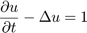
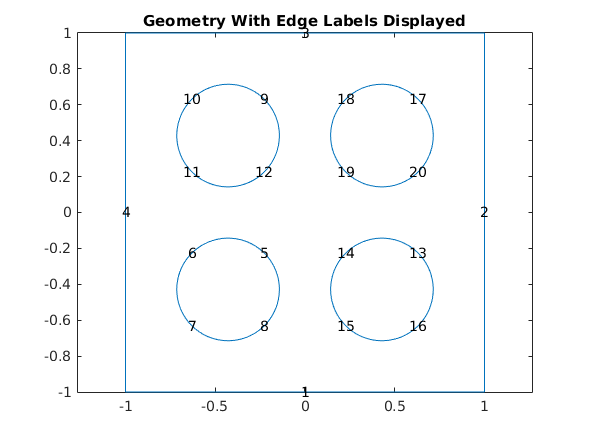
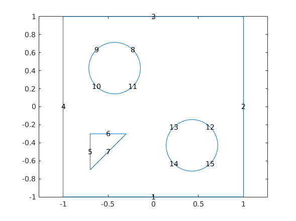
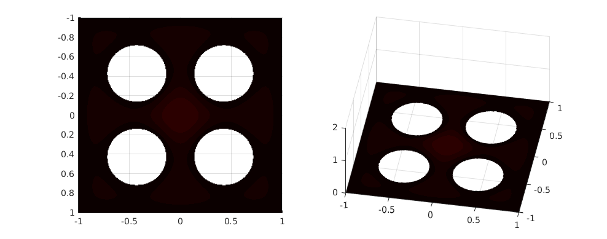

file: pde_heat_transfer_2D_v1.m author: Polcz Péter <ppolcz@gmail.com>
Created on 2016.12.07. Wednesday, 13:38:48
Contents
Inhomogeneous Heat Equation on a Square Domain
This example shows how to solve the heat equation with a source term using the parabolic function in the Partial Differential Equation Toolbox™.
The basic heat equation with a unit source term is

This is solved on a square domain with a discontinuous initial condition and zero Dirichlet boundary conditions.
Geommetry
% Create a PDE Model with a single dependent variable numberOfPDE = 1; pdem = createpde(numberOfPDE); % Create a geometry entity and append to the pde model L = 2; nHoles = 2; R = L/(2+2*nHoles+(nHoles-1)); xyRect = [-L/2 -L/2; L/2 -L/2; L/2 L/2; -L/2 L/2]; holes = zeros(nHoles*nHoles,3); holeCounter =1; x = -L/2 + 2*R; for i = 1:nHoles y = -L/2 + 2*R; for j = 1:nHoles holes(holeCounter,:) = [x y R]; holeCounter = holeCounter + 1; y = y + 3*R; end x = x+3*R; end pdeGeom = [geomDataFromPolygon(xyRect) geomDataOfCircularHoles(holes)]; geometryFromEdges(pdem,pdeGeom); % Plot the geometry and display the edge labels for use in the % boundary condition definition. figure; pdegplot(pdem, 'edgeLabels', 'on'); axis equal title 'Geometry With Edge Labels Displayed';
Problem Definition
c = 1; a = 0; f = 1; d = 1;
Apply Boundary Conditions% Copyright 1994-2014 The MathWorks, Inc.
% Solution is zero at all four outer edges of the square applyBoundaryCondition(pdem,'Edge',(1:20), 'u', 0);
Generate Mesh
msh = generateMesh(pdem,'Hmax',0.04); figure; pdemesh(pdem); axis equal
Generate Initial Conditions
The discontinuous initial value is 1 inside a circle of radius 0.4 and zero outside.
[p,~,t] = meshToPet(msh); u0 = zeros(size(p,2),1); u0 = ones(size(p,2),1); % ix = find(sqrt(p(1,:).^2+p(2,:).^2)<0.4); % u0(ix) = ones(size(ix));
Generate Time Discretization
We want the solution at 20 points in time between 0 and 0.1.
nframes = 200; tlist = linspace(0,0.1,nframes);
Find FEM Solution
u1 = parabolic(u0,tlist,pdem,c,a,f,d);
89 successful steps 0 failed attempts 180 function evaluations 1 partial derivatives 21 LU decompositions 179 solutions of linear systems
Plot FEM Solution
To speed up the plotting, we interpolate to a rectangular grid.
figure('Position', [168 562 982 386], 'Color', 'white') colormap(hot); x = linspace(-1,1,301); y = x; [~,tn,a2,a3] = tri2grid(p,t,u0,x,y); umax = max(max(u1)); umin = min(min(u1)); for j = 1:nframes, u = tri2grid(p,t,u1(:,j),tn,a2,a3); subplot(121); surf(x,y,u); view([0,-90]) caxis([umin umax]); axis([-1 1 -1 1 0 2]); shading interp; subplot(122); surf(x,y,u); view([10,60]) caxis([umin umax]); axis([-1 1 -1 1 0 2]); shading interp; Mv(j) = getframe; end movie(Mv);